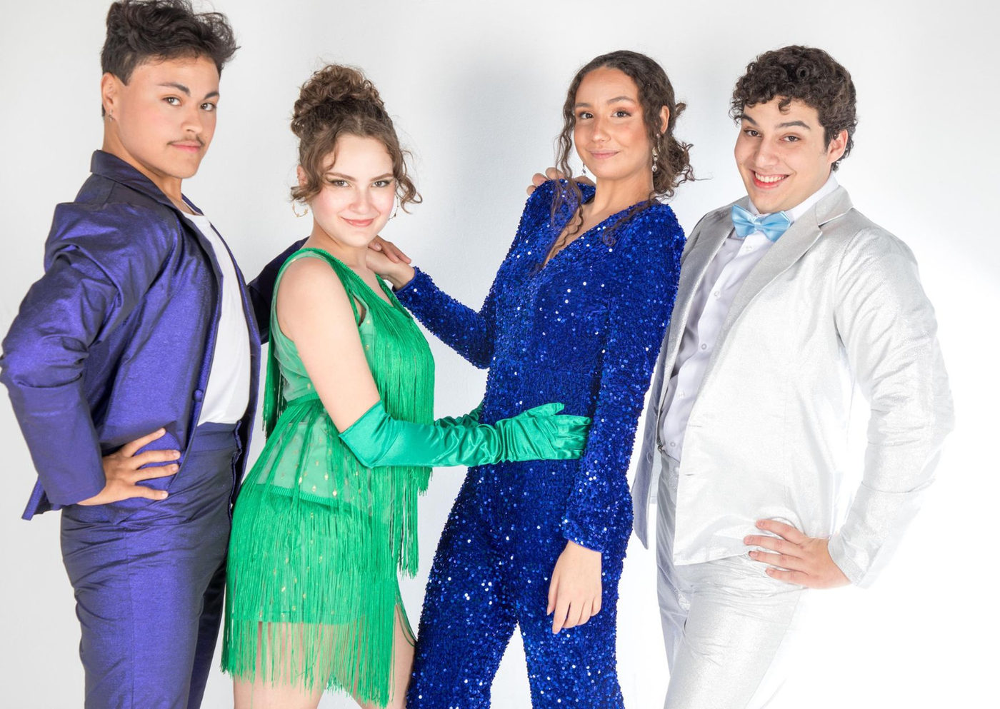

Foto — Helena Mello Fotografia
Teatro
Coletivo de Teatro Despertar estreia musical “Uma noite para brilhar”
Derivado do espetáculo da Broadway “ The Prom”, a montagem do coletivo conta a história de Emma, uma adolescente que mora em uma pequena cidade de Indiana, nos …